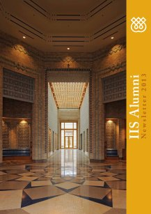

You will need the Flash plugin to view this publication
Download the Flash plugin for free here. Just refresh this page after installing Flash.
Also make sure that javascript is enabled in your browser.

Alternatively, you can download this publication in PDF-format - Click here.
Page 1
Page 2
Page 3
Page 4
Page 5
Page 6
Page 7
Page 8
Page 9
Page 10
Page 11
Page 12
Page 13
Page 14
Page 15
Page 16
Page 17
Page 18
Page 19
Page 20
IISAlumniNewsletter2013
MessagefroMtheCo-DireCtorToallIISalumniInthepastissuesoftheAlumniNewsletterIhighlightedthemilestonesandachievementsoftheIISaswebroadenthescopeoftheInstitutesworkinShiiStudies.FormeoneofthekeyfactorsinachievingtheIISgoalsisourcontinuedengagementwithouralumni.IfeelitisappropriateformetomentionhereHisHighnessaspirationsforIISgraduatesexpressedinalettertotheBoardofGovernorsinOctober2003Ihopeyouwillworkoutgoodanswerstotheirquestionssothatthelargestnumberpossibleofyourgraduateswilldecidetoserveourmanyvariedprogrammesandinstitutions.ThesegraduatesarearesourceofthegreatestimportancetothefutureoftheIsmailiTariqah.IhopeyousharemybeliefthatyouryearsofstudyattheIISwerejustthebeginningofyourjourneyandthataftergraduationapplyingyourknowledgeandusingtheresearchtoolsyouacquiredattheIISisequallyifnotmoreimportant.AssuchIamalwaysproudandhappytomeetourgraduateswhoarecontributingtoacademicinstitutionsaswellasinstitutionsoftheIsmailicommunity.AsalumniwhohaveanappreciationoftheculturesandhistoriesoftheMuslimworldyouarenowplacedinpositionsofresponsibilitytocontributetoscholarshipandlearningaboutIslamandaddresstheissuesandchallengesfacingMuslimcommunitiesindifferentpartsoftheworld.Since1983overfour-hundredalumnihavecompletedvarioushumanresourcedevelopmentprogrammesattheIIS.ForouralumnithereareanumberofMessagesopportunitiesforinvolvementwiththeIISthroughvoluntarycontributionsofyourtimeandknowledgeorbyworkingprofessionallyfortheInstitute.Iampleasedtoreportthatcurrentlythereareasmanyas42alumniworkingasmembersofstafforasconsultantsonspecificprojectsfortheIIS.WiththejoiningoftheIISandISMClibrariesthisyearandtheestablishmentofadedicatedIsmailiSpecialCollectionsUnitheadedbyanalumnusWafiMominGPISHclassof2006therewillbeopportunitiesforouralumnitodeveloptheircareersinthisimportantareaofwork.Dr.LailaHalaniGPISHclassof1998wasappointedHeadoftheDepartmentofGraduateStudies.SheplayedaninstrumentalroleintherecentreviewoftheIISbytheQualityAssuranceAgencyforHigherEducationwhentheInstitutereceivedthehighestavailablerankingofmakingcommendableprogress.IamalsopleasedtosharethenewsthatDrOmarAli-de-UnzagaGPISHclassof1997hasbeenappointedDeputyHeadofDARP.AssuchwenowhaveseveralIISgraduatesholdingseniormanagementpositionsattheIIS.FinallyIwouldliketosuggestthatyoureachouttoourAlumniRelationsUnitandletusknowwhereyouareonyourindividuallearningpaths.TheIISoffersarangeofexcitingopportunitieswhetheritistomentoranewgraduatecontributetoaspecificresearchprojectoreventakepartinalearningopportunitythroughattendingoneofourChapterGroupmeetings.MorethananythingIhopeyouwillstayintouchandallowustoengagewithyouasyoumoveforwardonyouracademicandprofessionalcareers.Dr.FarhadDaftaryCairoChicagoDamascusDhakaDubaiDushanbeHoustonIslamabadIstanbulKualaLumpurLisbonLondonMumbaiNewYorkOttawaParisRomeTorontoandVancouver.InonerespectthisvariedgroupofcitiesreflectsthediversitiesinherentintheAlumnibody.YettheselocationshaveoneelementincommonfortheAlumnitheyrepresentcitieswhereoverthepastfiveyearsalumnichaptergroupmeetingsandconferenceshavebeenheld.MyengagementwiththealumnihasbeenamostmeaningfulandchallengingexperienceformeandIwouldliketothankyouallforyoursupport.During2013alumnifromdifferentpartsoftheworldcontributedover11000hourstonumerousTKNassignments.ThisisamatterofgreatpridefortheInstitute.AtthesametimethelossofoneofourcolleaguesLailaLokhandwallaWTEP1983remindedusallofthetransiencyoflife.LailawillberememberedwithfondnessandrespectandIamsureyouwillalljoinmeinextendingoursincerecondolencesandprayerstoherfamily.AswelooktothefutureIhopethatyouwillcontinuetoparticipateintheactivitiesandprogrammesoftheAlumniAssociationbuildinguponpastfriendshipsandcreatingmemoriesafresh.Iwouldliketotakethisopportunitytowelcomenewalumniandwishthemtheverybestastheybegintheircareers.CongratulationsShellinaKarmaliAlumniRelationsCoordinator
ChapterGroups-AsiaEuropeNorthAmericaNorthaMeriCaNChaptergroupAlumnifromacrossNorthAmericametinNewYorkfortheirannualmeetingon21-24June.Themeetingbroughttogetherover65alumnitoexploreQuranApproachestoitsStudyanditsContemporaryRelevance.SpeakersatthemeetingincludedProfessorCarlErnstUniversityofNorthCarolinaDrOmarAli-de-UnzagaGPISHClassof1997currentlywithTheInstituteofIsmailiStudiesandDrNargisViraniWTEPClassof1983currentlywithNewSchoolNewYorkMrShirazKabaniHeadofCommunityRelationsIISMsShumailaHemaniGPISHClassof2009andcurrentlyaPhDcandidatewithUniversityofAlbertaMrAminNooraniHRAKDNandleadersoftheIsmailicommunityfromCanadaandUSA.europeaNChaptergroupAlumnifromacrossEuropemetinRomefortheirannualmeetingon25-28October2013.Themeetingbroughttogether35alumnitoexploreSecularisationandReligionintheModernWorld.SpeakersatthemeetingincludedProfessorPaoloLuigiBrancaDepartmentofReligiousScienceUniversitaCattolicadelSacroCueroMilanProfessorAlbertoMelloniInstitutodelaEnciclopediaItalianaDrAzizEsmailGovernorIISDrDagiDagievGPISHClassof2003currentlywithIISDrOtaredHaiderGPISHClassof1998currentlywithUniversityofOxfordandMrShirazKabaniHeadofCommunityRelationsIIS.asiaNChaptergroupAlumnifromacrossAsiaandAfricametinIstanbulfortheirannualmeetingon4-7July2013.Themeetingbroughttogetherover40alumnitoexploreSecularisationanditsimpactonFaithCommunities.SpeakersatthemeetingincludedProfessorRecepSenturkUniversityofIstanbulDrHadiAdanaliSeniorAdvisortothePrimeMinisterofTurkeyProfessorMehmetPacaciDirectorGeneralforExternalRelationsatthePresidencyofReligiousAffairsinTurkeyDrDaryoushMohamedPoorResearchAssociateIISMrSteveLewittHeadHumanResourcesIISandMrShirazKabaniHeadofCommunityRelationsIIS
theMeNtorsiNtraiNiNgMitiNitiativeFayyazAliAsifPenwalaZohirPiltaboevSTEPClassof2009andRizMuhammediSTEPClassof2010TheInstituteofIsmailiStudiesrecentlyannouncedanexcitinginitiativethatwouldallowSTEPteachersinthefieldtosupporttheContinuingProfessionalDevelopmentCPDofteachersglobally.InthisinitiativeafewSTEPteachersfromvariouscountrieswereselectedthroughaprocesstobecomeMentors-in-Training.TheseMentors-in-TrainingworkedcloselywithMrHanifViraniWTEPClassof1983MsMehjabeenDatooaswellasCPDscholars-DrShainoolJiwaMcGillClassof1984andDrFaroukMithaWTEPClassof1986andteachersinPakistantodevelophands-onprofessionaltrainingsessionsforteachersinPakistan.refleCtioNsfroMfourMeNtorsiNtraiNiNgItwasanhonortoattendtheCPDworkshopinPakistanandworkwithsuchamazingteachersinthefieldMomentsofprofoundreflectionwereinterspersedwithenjoyablepursuitsdeepcontemplationofourpedagogicalpracticespedagogicalsessionsandfieldtripstoIslamabadwerecoupledwithpoetryrecitationsdancingandlaughter.Thisexperienceallowedustoseeleadershipasameansofempoweringotherstoachievetheirfullpotential.ItalsoprovideduswiththeopportunitytomeaningfullyengagewiththeIISsSecondaryCurriculumandwithscholarsandtolookforwaysinwhichwecouldmakethepedagogicalcontentcomealiveforourstudents.WewereabletoshareourknowledgeandteachingpracticesfromCanadaandTajikistanwithothersinPakistanaswellaslearnfromourcolleaguesthere.Wewereexcitedtodiscoverthatweallsharedsimilarstrugglesthoughourindividualcontextsweredifferent.Itwasinspirationaltoworkamongstscholarsandexperiencedpedagogues.Theirsupportempoweredustoco-leadprocesseswithconfidence.Wefeltthatwewerepartofanintellectualcommunityconstantlyinquiringintodevelopingrefiningandenactingthebestwaystosupportteacherdevelopment.OurinteractionswithIISscholarsandexperiencedpedagoguesweretrulyinvaluable.Thecollaborativeapproachtoplanningtheworkshopalongsideaninternationalgroupofteachersledtoourgrowth.WeexchangedideasandperspectivesfromourlocalcontextswhichdeepenedourownunderstandingofwhatitmeanttoteachtheSecondaryCurriculum.Thiskindofinternationalcollaborationandcollectiveinquirywasgreatlyappreciatedbecausesuchinteractionsarerarewithinourbusyday-to-dayschedules.AlltheMentors-in-TraininghadanopportunitytoparticipateintheMentorshipTrainingWorkshopwhichtookplaceinDubaiinlateDecember.Participationinthisworkshopenabledustoaccesstheoriesaswellaspracticalapproachestomentorship.Weimmersedourselvesintheeducationalliteraturetoplanforeffectivementorshipinourlocalcontexts.Insightsfromthisworkshophavesignificantlyenabledustoserveasmentorsontheground.STEPteachersfromCanadaandTajikistanwhovisitedPakistanonaMentors-in-Trainingprogramme.MentorsInTrainingInitiative
ReflectionsonshahfaisalMosqueatRibutetoGodatthefoothillsofthehiMalayasAmbreenSalehGPISHClassof2008TheShahFaisalMosqueislocatedinIslamabadthecapitalcityofPakistan.NestledatthefootofthemajesticMargallaHillswhicheventuallybecomepartoftheHimalayanmountainrangethispristinemarblemosquecutsastrikingfigure.TheShahFaisalMosquewascompletedin1986atacostofapproximatelyUS120million.ItwasbuiltthroughthesupportofKingFaisalBinAbdulAzizofSaudiArabiaandisnamedinhishonour.ItisoneofthelargestmosquesinSouthAsiaandhasbeenhosttodignitariesfromaroundtheworldmanylocalpeoplefromIslamabadalsoidentifycloselywiththemosqueandcanbeseenintheprayerhallandcourtyards.Initiallythemosqueseclecticblendoftraditionalandmodernarchitectureevokedcriticism.Themosquedoesnothavearoundcentraldomeandwideminaretswhichisthetraditionaldesignofmanymosquesinthecountryinsteaditisaseriesoftrianglesdominatedbypencil-shapedhighminarets.HoweverthesettingofthemosquebroughtoutthebeautyofthisunusualdesignasthethinminaretsandslopingroofsmodeledonadeserttentreflecttheslopesandanglesoftheMargallaHills.Man-madebeautyisreflectedinthebeautyofnatureasmanycriticsacknowledgeandtheShahFaisalMosqueseemstopaysilenthomagetoGodthecreatorofallnaturalbeauty.ThemosquewasdesignedbyVedatDalokayarespectedTurkisharchitectwriterartistandpolitician.DalokayservedasMayorofAnkarafrom1973to1977.TheShahFaisalMosquewasasignificantprojectinhiscareerandreflectsalong-standingculturalandprofessionalrelationshipbetweenTurkeyandPakistan.Toreachtheinteriorofthemosqueyouhavetowalkacrossanexpansivewhitemarbleterraceadornedwithfountains.Thiswalkseemstosymbolicallyusheryouawayfromthemundaneaspectsofdailylifeandintoamorespiritualcalmrealm.Itisonlyuponapproachingtheentrancetothemosquethatyouareabletogetasenseoftheimpressivescaleofthebuildingwhichfromafarhadbeenmaskedbyitsgeometricdesign.Over100000worshiperscanbeaccommodatedinthemainprayerhallandthecourtyard.Theinteriorofthemosqueisasymphonyoftrianglesinbluewhiteandgold.Boththecarpetsandthefrontoftheprayerhallwhichsymbolizestheqiblaareavividblue.Theqiblaisdecoratedwithgoldgeometriccalligraphywhichenhancestheeffectofthecentralroundgoldchandelier.Thewallsofthemosqueanditscolumnsarewhite.ThemihrabinthewalloftheqiblathefocalpointduringtheprayerritualwhichalsoindicatesthedirectionoftheKabaiselegantlydesignedintheshapeofanopencopyoftheHolyQuranamasterpiececreatedbytheIsmailiartistGulgee.ThesimpleyetstrikinggeometricinteriorbringstomindtheKabaoneofthemostsacredMuslimsitesinMecca.PaintingsbythefamousPakistanipainterSadequaindecoratethemainprayerhall.Alongwiththesubliminalmessageoftheimportanceofartthemessagesoftheimportanceofacquiringwisdomandknowledgeseemtoresonatethroughtheprayerhall.AllthiswassuggestedbythelightflowingthroughthestructurethecentralgoldensuntheopenHolyQuranatthemihrabanotherbeautifulcopyoftheHolyQuraninaglasscaseattheentranceandthebooksliningtheshelvesleadingtoareadingroom.AsIstoodinthecentralhallwayIwasremindedofthefamousopeninglinesoftheQuranReadReadinthenameofthyLord...IthoroughlyenjoyedmyvisittotheShahFaisalMosqueandwouldrecommendittoanyvisitortoIslamabad.Awayfromthehustleandbustleofthegrowingcitythemomentsofsilenceinthemajesticprayerhallorawalkacrossthemarbleterracegivethevisitorasenseofpeace.ReflectionsReviews
aluMNiCoNtributiNgtothepreservatioNofisMailiheritageattheiisSincethecreationoftheIISLibraryin1979TheInstituteofIsmailiStudieshasrigorouslypursuedthemandateofacquiringpreservingandstudyingmaterialsofspecialrelevancetotheheritageoftheIsmailis.WithitscommitmenttopromotescholarlyresearchonthisheritagetheIISencouragesitsscholarsandstudentstomakeuseoftheinvaluableopportunitytoengagewiththespecialmaterialsandpursuetheirinterests.AmajorstepforwardinthisdirectionhasbeenthecreationofanewresearchunittheIsmailiSpecialCollectionsUnitISCUinwhichthealumniareplayinganimportantpart.TheaimoftheUnitisnotonlytopreservedevelopandmanagethespecialcollectionshousedattheIISmanuscriptsartefactsandcoinsrarebooksandperiodicalsarchivalmaterialphotographsandaudio-visualmaterialsbutalsotofacilitatethestudyofthissignificantrepositoryofspecialitems.TheunitisheadedbyMr.WafiMominGPISHClassof2006whobringshiswide-rangingknowledgeandexperienceofworkingwithmanuscriptsandotherspecialitemstotheUnit.Mr.MominiscurrentlyfinishinghisdoctoralstudiesattheUniversityofChicagohisresearchfocusesonthehistoricalformationoftheSatpanthiIsmailitradition.MostrecentlyservingastheKeeperofIsmailiCollectionsWafihasbeenleadingtheprojectofcataloguingtheIISsuniquecollectionofKhojkiandGujaratimanuscripts.ItisindeedagreatopportunitytobeapartofthismajorendeavourthetrainingeducationandintellectualinteractionsIhavehadattheIISsurelyplayacriticalroleinwhatIseektoachieveattheISCUthroughvariousprojects.WafiMominAnotheralumnuswhobringsinvaluableexperiencetotheUnitisDr.NourmamadchoNourmamadchoevGPISHClassof2005whoiscurrentlyaResearchandAdministrativeAssistantattheISCU.NourmamadchorecentlycompletedhisPhDatSOASwhichfocusedontheIsmailisofBadakhshan.InhiscontributiontotheworkoftheunithedrawsonhiseducationalbackgroundinMiddleEastandIslamicStudiesaswellashisexperienceofworkingwithmanuscriptsourcesinvariousarchivesintheUKandabroad.Itisagreatchallengetoworkwithprimarysourcessuchasmanuscriptsandcoins.Istartedreadingmanuscriptsinmyearlyteensundertheguidanceofmyfather.WhatfascinatesmeinworkingwithmanuscriptsourcesisthatyoudiscovernewdetailsthatreflecttheevolvingnatureofIsmailihistoryinaparticularcontext.NourmamadchoNourmamadchoevThespecialcollectionsattheIISholdcloseto3000manuscriptswritteninArabicPersianandIndiclanguagesandtheUnitisactivelyengagedincompletingthecataloguingofthisrepositorytobetterfacilitatescholarlyaccesstoandresearchonthesepreciousitems.Mr.KarimJavansexpertiseinPersianlanguageandliteraturesisextremelyvaluableinthiscontext.AGPISHalumnusfromtheclassof2004KarimiscurrentlypursuingaPhDfromtheSchoolofOrientalandAfricanStudies.HisroleintheUnitinvolvesthecataloguingandstudyofPersianmanuscriptsaboutwhichheisextremelypassionate.WorkingwithIsmailimanuscriptshasalwaysfascinatedme.Ihaveinheritedthispassionfrommyfamilyastheyownedmanyofthesemanuscriptsandalwaystalkedaboutthemoraboutcertainqasidasoranideologicalpointwithinthem.ItgivesmegreatpleasuretoseesomeoftheminourcollectionintheIIS.KarimJavanBesidesspecialmaterialsinArabicandPersianlanguagesmanuscriptsintheKhojkiandGujaratiscriptsalsoformasignificantpartofthemanuscriptcollection.AnumberofthesemanuscriptsareyettobecataloguedandthisiscurrentlybeingundertakenbyWafiMomin.UnderhissupervisionNaureenAliisassistingwiththiscataloguingproject.HavingrecentlygraduatedfromGPISHin2013withaMastersinGenderStudiesawardedbytheSchoolofOrientalandAfricanStudiesandhavingpreviouslyinternedfortheUnitNaureenAliisapplyingtheknowledgeofKhojkiandGujaratithatsheacquiredinGPISH.GPISHhasprovidedmewithawonderfulopportunitytobroadenmyhorizons.ItwasinthisprogrammethatIdiscoveredmyloveforlanguagesandscriptsespeciallyArabicandGujarati.ItwasalsothroughGPISHthatIdevelopedmypassionforstudyingdevotionalliteraturegenderissuesandIslamicart.MyworkwithintheISCUamalgamatesmyvariousinterestsandaddsdynamismtomylearning.NaureenAliAlongwithitscommitmenttoservethecommunitythroughthecollectionpreservationandstudyofthematerialsofIsmailiheritagetheISCUisequallycommittedtonurturingthepassionofourscholarsandencouragingtheircontributionsastheyareaninstrumentalpartofmaintainingthisheritage.PresentationofIsmailiHeritage-AlumniatWork
bRiefReviewafatiMidcodeofconductfoRtheiMaMsadMinistRatoRsKarimH.KarimMcGillClassof1984Ismailihistoryhasproducedarichbodyofliteratureonethics.TheyincludethePandyat-iJawanMardiattributedtotheNizariIsmailiImamMustansirbi-AllahIIsandginanssuchasSoKriya.TheFatimidsputforthmaterialsthatservedasbehaviouralguidesfortheImamsfollowersaswellasforinstitutionaladministrators.TwoexamplesofsuchwritingsarethosebyQadial-NumanandDaiAhmedbinIbrahimal-Naysaburi.TheIIShaspublishedacriticaleditionofaworkbythelatterauthoritistheArabictextandEnglishtranslationofal-Naysaburisal-Risalaal-mujazaal-kafiyafiadabal-duattitledACodeofConductATreatiseontheEtiquetteoftheFatimidIsmailiMissioneditedandtranslatedbyVerenaKlemmandPaulE.Walker.Daial-Naysaburiwholivedaroundathousandyearsagointhe11thcenturyCEhadachievedahighstatusintheFatimidImam-caliphal-Hakimbi-AmrAllahscourt.HisRisalawaswrittenatatimewhentheFatimidadministrationwassufferingfromcorruptionandrebellion.AshestatesneartheendofhisbookTheheartoftheImamispreoccupiedwithwhatthenhappenstohiscommunity.Hebecomesimpatientwiththemanddespairingofthemandofthefaithandthosewhoadheretoitheturnsawayandbecomesangrywiththem.TheevilmisfortuneofrebellionandthewrathoftheImamwillhitthemhismercyhavingdisappeared.Yeteachdaytheyincreasetheircorruptionandthusaddtothechastisementinstoreforthem.Thatbecomeslikethecorruptionthatweareseeingatthepresentmoment.TheRisalawasthereforeintendedtoremindtheadministratorsthedaisabouttheirdutiesandtheImamsexpectationsofthem.Al-NaysaburicommentsthattheImamdependedonthedaisfortheproperadministrationofthecommunityWhenGodquestionstheimamaboutthingsconnectedtotheaffairsofhiscommunityandhissafeguardingandcaringforthemtheimamwillaskhimthedaifortheimammadethathisresponsibility.Heistheoneanswerableforitanditwasuptohimtoarrangemattersinthatregard.Inthisrespectthedaisresponsibilitieswerenotonlyadministrativebutreligiousinnature.KlemmandWalkernotethatthetermdawacomesfromdawatal-haqqcalltotruth.IndeedthiswasthepropernameofthedynastygenerallyknownastheFatimids.Theconceptofthedawatal-haqqembodiesanintegralcommitmenttotruthandethics.ThiswasthemissionoftheFatimidCaliphate.Accordingtoal-NaysaburithedawaisbuiltonknowledgeilmGodfearingpietytaqwaandgoodmanagementsiyasa.HewarnsthatifthesecharacteristicsaremissingintheadministratorsthensecuritydecencypietylifehonourandchivalrywillceaseinsocietyandchaoswillreignintheImamscommunity.5KlemmandWalkerseditionofal-NaysaburisRisalaisanimportantcontributiontotheunderstandingofIsmailiconceptsofgovernanceparticularlywithrespecttotheintertwinednatureofdinanddunya.KlemmVerenaandPaulE.Walkereds.ACodeofConductATreatiseontheEtiquetteoftheFatimidIsmailiMission.LondonIISIBTauris2011p.75.Ibidp.72.Ibidp.1.Ibidp.76.5Ibidp.75.ReflectionsReviews
CulturalCoNNeCtioNsDrKarimGillaniGPISHClassof2003Thereisnofluteyetthereismelody.Thereisnosoundyetthereismusic.IwasborninKarachiPakistanintoahumbleandknowledgeablefamilywherethesignificanceoftheartssuchastheoraltraditionsofsingingfolksongsrecitingpoetryandappreciatingdiverseformsofmusicwasverymuchpartofmyeverydaylife.ThissubsequentlyledmetostartmyownmusicclassesfortheyouthandchildreninKarachiandtobecomeinvolvedinthemusicalandculturalscene.AfterthecollapseoftheSovietUnioninDecember1991IobservedasignificantculturalshiftinPakistan.Itwasatimeinwhichmanyperformingartistswereplacedunderimmensepressure.InterestinglymanySufimusicianssuchasAbidaParveenandNusratFatehAliKhanemployedmysticalideasandmusicasweaponstocounterextremistviews.ThereforeIwasalwaysinterestedinexploringwhatrolemusicplaysinthesocio-culturalenvironmentofasocietyhowdopeopleattachmeaningtoanyparticularkindofmusicandwhywhatistheculturalconnectionofmusicwithoraltraditionsandmemoryandwhatistheconnectionofsoundwithprayersandspirituality.IwasalsointriguedbythefunctionofmusicinsocietyespeciallywhenmusicisusedasatooltospreadmoderateandmysticalunderstandingsofIslam.Someofthesequestionshavealwaysinspiredmetobetterunderstandtheuniquefeatureofmusicandwhyitisapowerfultooltoexpressemotionsandideasthatareotherwisedifficulttocommunicate.AspartoftheInstitutesGraduateProgrammeinIslamicStudiesandHumanitiesIcompletedanMAandthenaPhDinMusicandReligiousStudiesfromtheUniversityofAlberta.InmyPhDdissertationentitledSoundandRecitationofKhojaIsmailiGinansTraditionandTransformationIexaminedtheroleandpowerofmusicandrecitationwithinthesocio-culturalandreligiouscontextsoftheMuslimsofSouthAsia.MyresearchshowsthatginanhymnsplayasignificantroleinmaintainingthecollectiveandculturalmemoryoftheIsmailiswherevertheymaylive.ThesehymnsareacentralfeatureofIsmailiMuslimpracticesbothinSouthAsiaandsomeotherpartsoftheworld.MydissertationsituatesginanswithinthewidercontextofMuslimpietyingeneralandinSouthAsianpoeticandmusicalcontextsinparticular.Thusfarginanshavebeenstudiedmostlyfromtextualandhistoricalperspectives.Howeveritisthroughhearingrecitingandperformingthemthatoneconnectswiththeirspiritualandculturalorigins.BasedontheirmusicalstructureandpoeticmetreonecanrecognisethecloseculturalproximityofginanstootherknownmusicalgenreslikethePirShamsSabzwari13thcenturyCEBrahmPrakashDivineLightversenumber71.CitedfromN.ShafiqueViraniSymphonyofGnosisASelf-DefinitionoftheIsmailiGinanTraditioninReasonandInspirationinIslamed.ToddLawsonLondonI.B.TaurisinassociationwithTheInstituteofIsmailiStudies2005p.516.CulturalConnections
KafiWaiBaitandDhaltraditionsofSindPunjabandGujarat.Myresearchexploredhowtheginantraditionisnotatextuallystaticorculturallyboundtradition.Ithasalwaysbeentransmittedthroughvariousmeansandiscontinuouslyevolvinginitssocio-culturallinguisticandmusicalcontextsandcontinuestobeavitalsourceofspiritualityamongtheIsmailisfromSouthAsia.IhavebeenprivilegedtoworkwiththeDepartmentofMusicattheUniversityofAlbertatoorganisetwointernationalconferenceswhichincludedconcertsworkshopsandcommunitydiscussions.ThefirstconferencewasSoundsandSpacesofMuslimPietyTraditionandTransformationwhichwasheldinMarch2011www.muslimpiety.org.ThesecondwastitledIAmaBirdfromHeavensGardenMusicSoundandArchitectureintheMuslimWorldwhichwasconvenedinSeptember2013www.heavens-garden.orginpartnershipwiththeAgaKhanUniversitytheAgaKhanTrustforCultureandtheAgaKhanMusicinitiative.Bothoftheseinternationalconferencesinvolvedrenownedspeakersandmusiciansfromvariouspartsoftheworld.IhavealsobeencomposingandperformingSufimusicforthelasttenyearsandhavesofarreleasedonealbum.MyrecentmusicalworkRaah-e-IshqThePathofEternalLovewillbelaunchedinMarch2014forwhichIhaveselectedexclusivelyclassicalSufipoetsfromCentralandSouthAsiatobesettomusicandperformedwithmySufiensembletosharetheprofoundmessagesofeternalloveespeciallyduringatimewhenthemediafocusesonthestereotypicalimagesofIslam.IhaveperformedinvariouspartsofNorthAmericaandsomeofmyperformancehighlightsincludespotsonCBCTelevisionandCJSRandCKUAradio.OneofmygreatesthonourswastoperformwiththeCanadianNationalIsmailiMusicalensembleNIMEbeforePrimeMinisterStephenHarperandHisHighnesstheAgaKhanattheopeningceremonyfortheDelegationoftheIsmailiImamatinOttawain2008andatthefoundationceremonyoftheAgaKhanMuseuminTorontoin2010.IthinknowisthetimethatweshouldusemusiccultureandtheartsastoolstosharethediverseexpressionsandarticulationsofIslamwithotherfaithcommunitiesinordertobettereducatethemaboutMuslimartcultureandspirituality.CulturalConnections
CanadaAroomfullofsoulsIseemyselfinallYetIwishonlytoseeyouTajikisTanFlipchartsLCDsAheavyload.ExhaustedbirdsofchhorboghUsaSoftwintersnowIdeaskeepfallingButhavenotmeltedindiaTwowonderingeyesOneinjoyOneindespairPakisTanMovingonahotdesertTouchedthatsparkCryingloudandreliefHaikus
ReflectionsReviewsReflectionsonthealsabahcollectionMuseuMoffineaRtshoustonArifSunesaraSTEPClassof2012OnatypicalhotandhumidAugustafternooninHoustonTexasIweavedmywaythroughthedensetraffictomeetmyfellowcolleaguesfromotherpartsoftheUnitedStatesattheMuseumofFineArtsHouston.LikemostoftheotherSTEPteachersIgratefullysteppedintotheair-conditionedoasisofthemuseumwhereIwasimmediatelyconfrontedwithnumeroussculpturespaintingsandartefacts.OverwhelmedItookadeepbreathandwonderedhowIwouldmakesenseofthediscordantmixtureofvisualstimuli.AfterallmuseumsaremostlybafflingtomeusuallymakingmefeelunculturedandunrefinedwhatdoesyetanotherceramicbowlwithanetchedpeacockreallymeanWhyareallthesesage-likepeoplearoundmesoenthralledAndsoIhalf-heartedlyproceededintotheIslamicArtsspaceswheremasterworksfromKuwaitsrenownedal-SabahCollectionwereondisplay.Theprivatelyheldal-SabahCollectionisoneofthemostexquisitevisualartcollectionsintheworldboastingspectacularjewellerymetalworkandglassworkcarpetspaintingsscientificandmusicalinstrumentsceilingpanelsmanuscriptsandofcourseceramicsfrommanygeographicalareasincludingtheIberianPeninsulaCentralAsiaandmore.Whilesittingintheauditoriumafteraguidedself-reflectiononthecollectioninfrontofusstoodDrFaroukMithatheformeracademiccoursedirectorofSTEP.Likeacaptainofashiphetookusonanadventurecalmlysteeringusthroughroaringseasofintellectualcuriosityandacademicrigour.AsaneducatorDrMithacompelledustochallengeourthinkingandholdourselvestohighacademicstandardsofcriticalthinking.Heencouragedeachofustoconsiderforexamplehowluxuryitemsandtheitemsofdailylifereflectedordidnotreflectreligioninthecolloquialoracademicsense.ForinstancewhyexactlywerearmoiresetchedwithcalligraphyconsideredIslamicinitshistoricalcontextandwhyisitconsideredsotodayMycolleaguespassionatelydebatedwhethertheuseofartefactscouldenableeffectivepedagogyparticularlyinareligiouseducationclassroom.Wereflectedonhowcontemporarynotionsofspiritualandculturalidentitiesmayhavebeenexemplifiedinthousand-year-oldmanuscriptsandcoins.ItwasthenthatIbegantoviewmaterialcultureasamediumthatcouldstimulategreaterconversation.ForexamplealthoughthesubtletiesofGulistanthePersianstorybySaadishownviaartwaslostintranslationwhenreadinEnglishbymycolleaguesandIwewereneverthelessabletoconverseabouttheapparentdisconnectbetweenthestoryitsdescriptionprovidedbythecuratorandtheaccompanyingpaintings.FinallyaftersomestronghintsaboutlanguageandhistoricalcontextfromDrMithaweallstartedtomakesenseofthemessageofSaadithatisthoughmanywisemenmaycommentonanddiscussthemeaningandpurposeoflifetheyaregenerallytooideologicaltotrulyunderstandtheexperiencesofthecommonman.AdditionallyforexamplewewereabletounderstandtheoudArabicmusicalinstrumentinthecollectionasaninstrumentthatwasanexemplarofculturalborrowingandingenuityonceitwasjuxtaposedalongsidethecommentaryoftheEgyptiannovelistandpoliticalcommentatorAhdafSoueifTheMuseumsobjectsmaybeexiledfromtheirplaceofbirthbanishedfromtheirquotidianusebuttheirindispensablejobnowistoremindusofacentralstrandoftheworldsheritageofanattitudeofmindofthegeniusofaculturethatwasabletocombinedifferencesevenoppositesandtoholdtheminabalancethatconstantlyremadetheworldbeautifulusefulnew.TheingenuitywitnessedwithintheworksofAndalusianmusicbecameasourceofjoyousinspirationthroughwhichtocontinuouslydiscoverthebeautiesofcreation.MostofallIwasgratefulthattheoncedauntingfeelinginducedbymuseumswasreplacedbyapersonalsenseofawesincerityandintellectualhumilitymodelledbytheleadersofourprofessionaldevelopmentsessioninHouston.
ReflectionsonhaGiasophiaistanbulShahnozValijonbekovaandSabiraVirani-STEPClassof2010Buildingsarereflectionsofthepastandwhenoneexploresthemcarefullytheycantellusstoriesofpeopleandplacesinhistory.TurkeysHagiaSophiaisaprimeexampleofabuildingthatunfoldsthenarrativesoftwogreatempirestheByzantineandtheOttoman.HagiaSophiabeganasachurchthatwascommissionedinthe7thcenturybytheByzantineemperorJustinian.Itservedthedualpurposeofannouncinghispoliticalaspirationsandestablishingreligiousideologies.ThestructureitselfwasanarchitecturalfeatofitstimestandingtallatthecrossroadsofEuropeandAsiaandchallengingthesupremacyofthethenpowerfulRomanEmpire.TheMuslimrulerswhocapturedConstantinoplecenturieslatercontinuedusingspacesassymbolsoftheirauthority.Theyrefusedtodestroythebuildingandturneditintoamosque.TheyadaptedthespacebyaddingfeatureslikeamihrabcalligraphicroundelsQuranicinscriptionsandpencilshapedminarets.ItwasalsoamodelstructurefortheirsubsequentconstructionsinIstanbul.HagiaSophiawasturnedintoamuseumbyMustafaKemalAtaturkthefirstTurkishpresidentduringhisdrivetomodernisethecountryintheearly1920s.TherestorationdonetothebuildingatthattimeallowsustoseeboththeChristianandMuslimfeaturesnexttoeachother.InitstrueessencethebuildingtellsusastoryofacitywhichhasbeenthecradleofthegreatOttomanandByzantinecivilisations.ForteachersinvolvedinthedeliveryoftheIISSecondaryCurriculumthevisittoHagiaSophiabroughtmanyaspectsofthecurriculumtolifeespeciallythoseoftheMuslimSocietiesandCivilizationsmodule.Thismoduleusesarchitectureasoneofthetoolstoexplorevariousfacetsofdifferentcivilisations.Itpresentsworksofarchitectureasmirrorsoftheissuesandchallengesaswellasthevaluesandbeliefsofasocietyandofthechangesthatoccurredinthesesocieties.IfoneviewsHagiaSophiainthislighttherearecruciallessonstobelearntfromthisarchitecturalmasterpiece.Thefirstlessonisthatthepastinspiresthefuture.TheOttomanscreatedauniqueidentityforthemselvesbydrawingontheknowledgeoftheirpredecessors.Thisprincipleallowsustounderstandthevaluehistoryholdsinthepresenttocreateaprogressivetomorrow.Thesecondlessonisthatpeopleculturesandreligionshavemoreincommonthanmeetstheeye.Commongroundcanbefoundbyacceptingdiversity.Finallyonefeelsthatthevaluesofpastcivilisationswhicharereflectedinthearchitectureofthebuildingmayholdthekeytoresolvingtheconflictsconfrontingoursocietiestoday.Theneedtoestablishanindividualisticidentityisbeingpursuedmorethaneverbeforefuellingriftsratherthansynergy.Yetidentityismultilayeredandmultidimensionalanditsvariousaspectscannotbesegregatedfromoneanother.ThebeautyofHagiaSophiaisitsassimilationofthemultifacetedaspectsofitspasttogeneratesomethingunique.VisitingtheHagiaSophiareinforcedourstrongbeliefthatbuildingstalkyoujustneedtolearntolistentothem.ReflectionsReviews
ReflectionsReviews
PapersPresentationsPublicationsalidaziz.EmergingReasonTheFridayTimes13December2013.Availableathttpwww.thefridaytimes.comtftemerging-reasonSectarianIntoleranceOurDamnedSpotViewpoint28November2013.Availableathttpwww.viewpointonline.net201401sectarian-intolerance-our-damned-spotIdentityDebatesTheNews23November2013.Availableathttpwww.thenews.com.pkTodays-News-9-215875-Identity-debatesSeparatingDancefromtheDancerTheNews31August2013.Availableathttpwww.thenews.com.pkTodays-News-9-199164-Separating-dance-from-the-danceral-e-UzgMirim.RelacionesdecontinuidadyrupturaentrelostejidosandalusesyegipciosFatimesycoptosdelperiodoislmicoRelationsofContinuityandDisruptionbetweenAndalusiandEgyptiantextilesFatimidsandCoptsfromtheIslamicErapresentedattheSimposioInternacionalLainvestigacintextilylosnuevosmtodosdeestudioInternationalSymposiumTextileResearchandNewMethodsofStudyUniversidadComplutenseMadridSpain27and28February2013.TheMaterialcultureandHistoryofIslamicEmbellishedTextilesatthePapyrusMuseuminViennapresentedattheCHORDCentrefortheHistoryofRetailingandDistributionWorkshopEmbellishedTextilesInterpretationandCareofFineNeedleworkinMuseumsandHistoricHousesUniversityofWolverhamptonUK12June2013.EmbroideredPoliticsACaseStudybetweenal-AndalusandCastillapresentedattheTextileSocietyofAmericas13thBiennialSymposiumWashingtonDC1822September2012.AvailableonlineMay2013httpdigitalcommons.unl.edutsaconf655al-shrnuh.AnIslamicApproachtoMoralVirtueFakhralDinal-RazisTreatmentofBirrVirtueinhisAl-Tafsiral-KabirMelangesdelUniversiteSaint-Joseph642012.Al-Sadaqawaturathal-fadilaal-akhlaqial-MashriqFriendshipandvirtueliteratureinIslamVolume2July2013Beirut.arifHu.InvestigatingtheEffectivenessofRole-playsinTeachingtheLiteratureModulepresentedattheAKU-IEDsAgaKhanUniversityInstituteofEducationalDevelopment9thInternationalConferenceInSearchofRelevanceandSustainabilityofEducationalChangeKarachiPakistan13November2012.InvestigatingtheEffectivenessofRole-playsinTeachingtheLiteratureModuleUSAIDEducationConferenceonTeacherRecruitmentPreparationandPolicyKarachiPakistan2021August2013.azizErum.HowCanArtActivitiesHelpStudentsExpresstheirUnderstandingoftheEthicsandDevelopmentModulepresentedattheAKU-IEDsAgaKhanUniversityInstituteofEducationalDevelopment9thInternationalConferenceInSearchofRelevanceandSustainabilityofEducationalChangeKarachiPakistan13November2012.BizYhi.ModernEducationinAfghanistanDevelopmentsInfluencesandLegaciessince1901.LondonRoutledge2013.Afghanistanafter2014AnEducationalPerspectivepresentedattheTDFTheDemocracyForumSeminarCanUSTalkswiththeTalibanYieldPositiveResultstheSchoolofOrientalandAfricanStudiesSOASLondon21October2013.TheRe-educationofAfghanistanpublishedinterviewAsianAffairsOctober2013.Availableathttpasianaffairs.inoctober2013interview.html.AfghanistanReligionStateandEducationinEducationinWestCentralAsiaed.Mah-eRukhAhmad.LondonBloomsbury2013pp.2138.PoliticalDevelopmentsandEducationinAfghanistan20022013ChallengesOpportunitiesandExpectationspresentedattheUniversityofCentralAsiaBishkekKyrgyzstan10October2013.TheShiaIsmailisofAfghanistanandtheirReligiousRitualsandTraditionsChangeContinuityandIdentitypresentedatthe32DeutscherOrientalistentag32ndGermanOrientalistDayWestflischeWilhelms-UniversityGermany2327September2013.ReligiousRitualsandtheConstructionofAuthorityAStudyoftheShiaIsmailiTraditioninAfghanistanpresentedattheThirdAnnualConferenceConstructingAuthoritythroughCustomandTraditiontheAmericanUniversityofCentralAsiaBishkekKyrgyzstan2728September2013.EducationalPerspectivesontheInternationalDevelopmentEngagementsinAfghanistan20022013presentedattheXIIIESCASEuropeanSocietyforCentralAsianStudiesBiennialConferenceNazarbayevUniversityAstanaKazakhstan57August2013.Blisbri.UnderstandingFETTheCaseforProtectingContract-BasedLegitimateExpectationspresentedattheSeventhAnnualJurisInvestmentTreatyArbitrationConferenceWashingtonDC22April2013.dgievdgikhuo.RegimeTransitioninCentralAsiaStatenessNationalismandPoliticalChangeinTajikistanandUzbekistan.LondonRoutledge2013.IslamandSecularisminPost-CommunistCentralAsiapresentedattheannualmeetingoftheEuropeanChapterGroupoftheIISAlumniAssociationRomeItalyOctober2013.
dtooal-krim.SociologicalExplorationofValuesinaGlobalisingContextBritishSociologicalAssociationsAnnualConferenceEngagingSociology35April2013London.dilorbeovZmir.ContemporaryIsmailiDiscourseonModernityinTajikistanpresentedattheinternationalconferenceIslaminCentralAsiaPoliticsSocietyandResistanceInstituteofArabandIslamicStudiesUniversityofExeter2425November2012.ContemporaryIsmailiRenewalinTajikistanKhorogEventsinPerspectivepresentedattheSecondAnnualConferenceFormalandInformalCentralAsiaInstitutionsIdentitiesandDiscoursestheAmericanUniversityofCentralAsiaBishkekKyrgyzstan2829September2012.TheDynamicsofIslamandModernityinTajikistanContemporaryIsmailiDiscourseparticipationinabookworkshopNovember2012.Fzlnoori.WhatDoesitMeantobeHumanVirtueEthicsPedagogyinaReligiousEducationClassroominVancouverCanada2ndGlobalConferenceSpiritualityinthe21stCenturyAttheInterfaceofTheoryPraxisandPedagogyPraguein2012.WhatDoesitMeantobeHumanVirtueEthicsPedagogyinaReligiousEducationClassroominVancouverCanadainSpirituality-NewReflectionsonTheoryPraxisandPedagogyEditedbyMartinC.FowlerMichaelWeissandJohnL.Hochheimer2012.Gowlazmeeami.UnderstandingwaysandtheimpactofstudentsmakingpersonalconnectionwiththecontentofthecurriculuminPakistaniREcontextInternationalEducationConferenceTeacherRecruitmentPreparationandPolicyHigherEducationCommissionandtheUSAIDTeacherEducationProjectKarachiPakistan13November2013.UnderstandingwaysandtheimpactofstudentsmakingpersonalconnectionwiththecontentofthecurriculuminPakistaniREcontextAKU-IEDsInternationalConferenceInsearchofRelevanceandSustainabilityofEducationalChangeAgaKhanUniversityInstituteforEducationalDevelopmentKarachiPakistan2021August2013.HirOtre.TheSyrianIsmailiandSalamiyahALostChapterintheHistoriographyoftheArabRenaissancepresentedattheannualmeetingoftheEuropeanChapteroftheIISAlumniAssociationRomeItalyOctober2013.FromtheSyrianUprisingtotheCivilWarTheInterdiscursiveConflictsinCultureandMediapresentedattheReutersInstitutefortheStudyofJournalismconferenceAudiencesMediaEnvironmentsandDemocratizationaftertheArabSpringUniversityofOxford28February1March2013.TheArabianNightspresentedattheworkshopOrientalTalesinWesternContextsIMaisonFranaiseOxford22February2013.HmiBilqui.HowDoesTeacherQuestioningduringDebriefingSessionsEncourageLearnerstoThinkCriticallyAbouttheLessonpresentedattheUSAIDTeacherEducationConferenceinPakistanTeacherRecruitmentPreparationandPolicyKarachiPakistan2021August2013.HowDoesTeacherQuestioningduringDebriefingSessionsEncourageLearnerstoThinkCriticallyAbouttheLessonpresentedattheDepartmentofEducations2ndEducationConferenceEducationalDevelopmentinaChangingWorldMysteriesandMythsofthe21stCenturyInstituteofBusinessManagementKarachiPakistan30November2013.HliPrvee.DiscoursesofResistanceandOppressionintheCultureWarspresentedattheAnnualMeetingoftheAmericanAcademyofReligionBaltimoreUSA2326November2013.Hemishumil.ForgottenWaysofThinkingasoundscapecompositionplayedattheSocietyforEthnomusicologyConferencesR.LStevensonPrizeConcertIndianapolisUSANovember2013.MusicalMobilitiesPakistaniMusiciansattheSmithsonianFestivalin1976presentedattheCanadianSocietyforTraditionalMusicEdmontonMay2013.HirjiZulfir.MadeNottoBeSeenRe-placingDanceinMuslimContextspresentedattheAmericanAnthropologicalAssociationConferencePanelonVisionVisualityandVisualCultureIslamicContextsandPublicsChicago2024November2013.BainaYaFalumeSheikh-SirMbarakal-Hinawy1896-1959MohamedKaramaKhalidKittotrans.AbantuPublicationsE.A.Ltd.Nairobi2013ISBN978-99-66-094-35-3174ppASwahilitranslationofBetweenEmpiresSheikh-SirMbarakal-Hinawy1896-1959Azimuth2012.DanceandtheMakingofMuslimSpacefilmscreeningattheYorkCentreforAsianResearchDiversityRightsandReligionSeminarYorkUniversityToronto21March2013.TeachingSensoryAnthropologypresentedattheCentreforImaginativeEthnographyYorkUniversityToronto11April2013.HuiFheem.UseofImageTheatreinaSecondaryClassroompresentedattheUSAIDTeacherEducationConferenceinPakistanonTeacherRecruitmentPreparationandPolicyKarachiPakistan2021August2013.TextbooksPowerandSocietypresentedattheHistoryofEducationSocietyUniversityofWinchesterHampshire1-2December2012.PapersPresentationsPublications
ilolevabdulmmd.PirshipinBadakhshanTheRoleandSignificanceoftheInstituteoftheReligiousMastersPirsinNineteenthandTwentiethCenturyWakhanandShughnanJournalofShiaIslamicStudies6no.2Spring2013pp.155176.EducationinModernTajikistanAchievementsandChallengespresentedattheconferenceTajikistaninthe21stCenturyProspectsforDevelopmentandProgressLondon27November2013.jwshnool.MastersandSlavesTheRoleofSlavsintheFatimidMediterraneanEmpireinthe4th10thCenturypresentedattheannualMiddleEasternStudiesAssociationMESAIISsponsoredpanelonFatimidstudiesNewOrleansOctober2013.TheFounderofCairoTheFatimidImam-caliphal-MuizzandhisEraIsmailiTextsandTranslationsLondonI.B.Tauris2013.kdwlLl.SelectiveCosmopolitansTutorsandStudentsExperienceofOffshoreHigherEducationinDubaipresentedattheconferenceReligiousEducationinaGlobal-LocalWorldUniversityCollegeCorkIreland2930August2013.co-uthoredwthirfna.RndSelectivecosmopolitanstutorsandstudentsexperienceofoffshorehighereducationinDubai.inCompareAJournalofComparativeandInternationalEducationSpecialIssueEducationMobilitiesandMigrationPeopleIdeasandResources4352013.httpwww.tandfonline.comeprintga4IfaRT4H9Fg75ANzaffull.Uhe4Jxu-2uINegotiatingtheNationTheVoicesofYouthfromPamirinPost-SovietTajikistan.NationsandNationalism21stCenturyEthnographyNewepistemologicalassumptionsGothenburgUniversityMay2013.SelectiveCosmopolitansLanguageandCultureinInternationalHigherEducationinDubaipresentedattheUniversityofOxfordNovember2012.krmkrmH.PluralismMigrationSpaceandSongIsmailiArrangementsofPublicandPrivateSpheresinDiverseSpacesIdentityHeritageandCommunityinCanadianPublicCultureed.SusanAshley.NewcastleuponTyneCambridgeScholarsPublishing2013pp.148169.AnIndecentProposalConsideringtheQuebecCharterofValuespresentedatCarletonUniversityOttawaSeptember2013.DiasporasStatesandMediaTechnologiesDeconstructingtheDominantFramesofUnderstandingTransnationalConflictkeynoteaddresspresentedattheconferenceAWorldinFluxTheMovementofConflictinthe21stCenturyUniversityofTorontoMunkCentreforGlobalAffairsTorontoMarch2013.TheCulturalAspectsofImmigrantIntegrationpresentedattheInternationalConferenceonMigrationandIntegrationManagementOttawaMarch2013.BookreviewofDiasporabyDesignMuslimImmigrantsinCanadabyHaidehMoghissiSaeedRahnemaandMarkJ.GoodmanUniversityofTorontoPress2009CanadianEthnicStudies4142no.3-12012pp.279281.CanadianMulticulturalismHistoricalandPoliticalContextspresentedattheRoundtableonCanadasExperienceswithPluralismGlobalCentreforPluralismOttawa2012.Availableathttpwww.pluralism.caimagesPDF_docspluralism_paperskarim_paper_pp1.pdfWhoseMemoryRe-thinkingOrientalistandOccidentalConceptualisationsofIslamicArtIISAlumniNewsletter2012.Availableathttpwww.iis.ac.ukWebAssetsLargeRethinking20Orientalist20and20Occidental20Conceptualisations.pdfThePublicandPrivateSpacesofaTransnationalCommunityIsmailiInstitutionsinCanadapresentedattheconferenceDiverseSpacesExaminingIdentityCommunityandCitizenshipwithinCanadianPublicCultureFrostCentreforCanadianStudiesandIndigenousStudiesTrentUniversityPeterborough21April2012.krmlaleem.IslamandSocialMediaCreatinganEthicalFrameworkTheIsmailiCanadaSummer2013.ASymbolicExpressionofValuesTheIsmailiUnitedKingdomSpring2013.kmkrm-aly.KeepingallthePartsAdaptationAmidstDramaticChangeinthePamirMountainsinContinuityandChangeinCulturalAdaptationtoMountainEnvironmentsFromPrehistorytoContemporaryThreatsed.L.R.Lozny.NewYorkSpringer2013pp.303317.co-uthoredwthMorgnL.Ruelle.FoodwaysTransmissionintheStandingRockNationFoodandFoodways21no.4November2013pp.315339DOI10.108007409710.2013.850007.etl..SocioenvironmentalThreatstoPastoralLivelihoodsRiskPerceptionsintheAltayandTianshanMountainsofXinjiangChinaRiskAnalysisNovember2013DOI10.1111risa.12146.PluralisticIndigenousKnowledgeSystemsinSustainingFoodSovereigntypresentedattheconferenceoftheAmericanAnthropologicalAssociationChicagoUSA23November2013.Socio-culturalandEnvironmentalChangeinthePamirMountainsAgricultureandClimateChangeinDebarkpresentedatKnowledgeExchangebetweenFarmersScientistsandLocalGovernmentDebarkEthiopiaMarch2013.PapersPresentationsPublications
co-uthoredwithLenneM.avery.TheOikosofRuralChildrenALessonfortheAdultsinExperientialEducationJournalofSustainabilityEducation5Spring2013pp.117.Availableathttpwww.jsedimensions.orgwordpresscontentthe-oikos-of-rural-children-a-lesson-for-the-adults-in-experiential-education_2013_05etl..InvitationtoEarthStewardshipGuestEditorial.FrontiersinEcologyandEnvironment11no.72013p.339.etl..GlobalAssemblagesResilienceandEarthStewardshipintheAnthropoceneFrontiersinEcologyandEnvironment11no.72013pp.341347.TheHumanEcologyofClimateChangepresentedattheconferenceAnInterdisciplinaryChallengeofIndigenousKnowledgeandScienceCollegeofNaturalSciencesUniversityofAddisAbabaEthiopia22March2013.IndigenousKnowledgeClimateChangeandAnticipatoryCapacityAnInterdisciplinaryChallengepresentedattheAppliedBiodiversityNationalScienceFoundationIntegrativeGraduateEducationandResearchTraineeshipTexasAMUniversity12February2013.kehodrabr.TheMovementofIdentitiesinPostSocialistZanzibarThepoliticsofbelongingintheeraofTourism.Lexington2013ThePriceofBrandingtourismandtheelusivesearchforcultureamongEmiratisinDubaiUAEinAndySpiessed.TourismDevelopmentintheGCCStatesReconcilingEconomicGrowthConservationandSustainableDevelopment2013.khijn-e-alm.ExploringManagementPracticesofthePrincipalsfromtheElementarypresentedatUSAIDConferenceonTeacherRecruitmentPreparationandPolicyKarachi2021August2013.khmianil.SupportedthedevelopmentandwritingofthereportAreOurChildrenLearningAnnualLearningAssessmentReportNairobiKenyaJanuary2013.www.uwezo.com.khnMirBiz.SurvivalofSpiritualLifeReligiousPoetryintheCentralAsianIsmailiMuslimTraditioninStudiesinCentralandInnerAsia10.TorontoAsianInstituteUniversityofToronto2013pp.141166.khnshhid.AnInvestigationoftheImpactoftheActiveLearningApproachwithintheIsmailiKarachiPakistanReligiousEducationClasspresentedattheUSAIDEducationConferenceonTeacherRecruitmentPreparationandPolicyKarachiPakistan2021August2013.khimniZulfiqr.ReligiousBelongingandTransnationalCulturalFlowsAmongtheIsmailiNizariMembersofUKpresentedattheSociologyofReligionstreamoftheBSABritishSociologicalAssociationAnnualConferenceLondonApril2013.khowMlisultn.ToWhatExtentCantheTeachersCollaborativeLearningTechniquesHelpEnhanceHistoricalThinkingSkillsAmongSecondaryPupilsinKarachiPakistanpresentedattheAKU-IEDs9thInternationalConferenceInSearchofRelevanceandSustainabilityofEducationalChangeKarachiPakistan13November2012.HelpingLearnerstoIdentifyPracticeandEnhancetheirSkillsACaseStudyofPersonalTeachingExperiencepresentedattheUSAIDTeacherEducationConferenceinPakistanTeacherRecruitmentPreparationandPolicyKarachiPakistan2021August2013.Lhnianih.KohlberginMumbaiAStudyoftheCulturalImplicationsoftheMoralReasoningofIndianSecondaryReligiousEducationStudentspresentedattheJointNationalConferenceCenterforIslamicStudiesBatonRougeUSA1416February2013.Mhdviamin.AnalphabeticalindexofsectionheadingsintheShahnamapublishedbyImamKhomeiniInternationalUniversitypublications293pagesISBN9786005024265LCPIR4494M9N8.PersianQazvinIran2013.ToolsforTeachingPersianinaVirtualEnvironmentFromDesigntoImplementationinJournalofTeachingPersianLanguagetoNon-PersianSpeakersArticle5Volume1Number22013pp61-82.httpjplt.journals.ikiu.ac.ir_actionarticleInfoarticle234vol34AProposedUNICODE-BasedExtendedRomanizationSystemforPersianTextsinInternationalJournalofInformationScienceandManagementIJISMVol10N12012.httpijism.ricest.ac.irojsindex.phpijismarticleview129MtibeovOtmbe.ThreeSocialGroupsActiveinTajikistanfromthelate1980suntil1992inTheEurasiaStudiesSocietyJournalVol.2.No.1February2013.Merchntkrim.HowdoStudentsofREinCenterAinKarachiRespondtoCollaborativeMethodsofLearningpresentedattheUSAIDTeacherEducationConferenceinPakistanTeacherRecruitmentPreparationandPolicyKarachiPakistan2021August2013.MithFrou.ApproachestoSocialJusticeIssuesthroughInterrogatingthePoliticsofIslamophobiaandAnti-AmericanismTeachingMohsinHamidsnovelTheReluctantFundamentalisttoSecondaryTeacherEducationCandidatespresentedattheCanadianSocietyfortheStudyofEducationCSSEConferenceVictoria4June2013.Mithkrim.TheViewDownUnderAustralianIsmailiMuslimYouthandtheQuestforIdentitypresentedattheinternationalconferenceInterculturalismMeaningandIdentityLisbonPortugal2013.PapersPresentationsPublications
Moezsir.UsingDialogueasaTooltoPromoteCriticalThinkingSkillspresentedattheUSAIDTeacherEducationConferenceinPakistanTeacherRecruitmentPreparationandPolicyKarachiPakistan2021August2013.UsingDialoguetoPromoteCriticalThinkingamongREStudentsintheContextofPakistanpresentedattheAKU-IEDs9thInternationalConferenceInSearchofRelevanceandSustainabilityofEducationalChangeKarachiPakistan13November2012.Momikhojsmree.Service-LearningPedagogyofActionandReflectionpresentedattheAKU-IEDs9thInternationalConferenceInSearchofRelevanceandSustainabilityofEducationalChangeKarachiPakistan13November2012.MuborhoevMrodilto.IslamicScholasticismandtheTraditionalEducationandTheirLinkswithModernHigherEducationandSocietiesInternationalJournalofReligionandSpiritualityinSociety3no.12013pp.3751.UniversitiesofEuropeandMuslimContextsPitfallsandOpportunitiesofEducationalBorrowingandCollaborationpresentedattheUniversityofDerbysconferenceCollaborativePartnershipsbetweenUniversitiesandMuslimInstitutionsDismantlingtheRoadblocksSenateHouseUniversityofLondon23May2013.IslamicScholasticismandTraditionalEducationandtheirLinkswithModernHigherEducationandSocietiespresentedattheThirdInternationalConferenceonReligionandSpiritualityinSocietyArizonaStateUniversityTempleUSAMarch2013.P-shirzncim.ExploringtheCityintheCinemaofBahramBeyzaieIranianStudies46Issue5April2013pp.811-828.TheDivineWordontheScreenReligiousEpicsinIranianCinemapresentedattheQuranicStudiesConferenceApproachestotheQuraninContemporaryIranTheInstituteofIsmailiStudiesLondon24September2013.ImaginingtheDiasporaintheNewMillenniumComediesofIranianCinemaIranianStudies46Issue2March2013165-184.DepictingtheDiasporainIranianComediespresentedatthePersianCivilisationSeminarSeriesUniversityofEdinburghJanuary2013.PjwiFrid.APassionateSenseofthePotentialTowardsConstructingaNewSocialImaginationkeynoteaddresspresentedattheconferencePost-ColonialHigherEducationHabibUniversityKarachiPakistan19October2013.FaithSchoolsandtheReligiousOtherTheCaseofMuslimSchoolspresentedattheAnnualBritishEducationalResearchAssociationBERAConferenceUniversityofSussexBrighton35September2013.TheIdeaofIslamicEducationOriginsChallengesandPossibilitiespresentedatthePhilosophicalEducationSeminarPhilosophyCentreInstituteofEducation5June2013.RjRhim.TechnologyEnabledLearninginUSPostsecondaryEducationTheIsmailiUSASummer2013.Rehmiami.IbtidaiShiiFikrUrduTranslationofEarlyShiiThought.PakistanOUP2013.OriginalpublicationinEnglishArzinaLalaniEarlyShiiThought.LondonI.B.Tauris2000.ImprovingTeacherEducationthroughChangeinAssessmentPracticespresentedattheUSAIDTeacherEducationConferenceinPakistanTeacherRecruitmentPreparationandPolicyKarachiPakistan2021August2013.RehmindiamiwithnjmPhulpoto.AjrakasaSymbolTheFabricofLifeandCulturalAffinityNewHorizons6no.22012pp.1724.sidulamier.ChineseandUygurtranslationsofAShortHistoryofIsmailis.LondonWeberPublishingInternationalLtdinTaipeiTaiwan2013.OriginalpublicationinEnglishFarhadDaftaryAShortHistoryofIsmailis.EdinburghEdinburghUniversityPress1998.ABriefAnalysisoftheEvolutionoftheConceptofIdentityintheUygurlanguageinSocialSciencesPlatformXinjiangChina2013.schediaml.PlacingReligionunderGlassTheConstraintsandPossibilitiesofExhibitingIslamspecificreporttotheAmericanMuseumofNaturalHistorysNewYorkethnographiccollectionsonIslam2013.InteractionsAmongPeoplethroughTradeandTechnologyReligionanditsMaterialFormspresentedataworkshopattheAmericanMuseumofNaturalHistoryUSA4October2013.sher-Bzkh.MediaUnleashedSensationalisminPakistansElectronicMedia.SaarbrckenGermanyLAPLAMBERTAcademicPublishing2012.sulemFhmid.MakingLovenotWarTheIconographyoftheCockfightinMedievalEgyptinErosandSexualityinIslamicArted.FrancescaLeoniandMikaNatif.BurlingtonUSAAshgate2013.TjLilnz.Public-PrivatePartnershipthroughStrengtheningDisasterInformationCentrespresentedattheInternationalConferenceonBuildingResilienceSriLanka1719September2013.PapersPresentationsPublications
CommunityengagementtowardsincreasingsocietalresiliencepresentedattheInternationalConferenceonBuildingResilienceSriLanka1719September2013.Tlbazz.High-impactpracticesforculturalcompetencyinNewEnglandJournalofHigherEducation9August2013.httpwww.nebhe.orgthejournalhigh-impact-practices-for-cultural-competencySecretsoftheShamanEncouragingandInspiringStudentstobeSuccessfulpresentedattheAnnualAcademicAdvisingConferenceTampaUSAMay2013.PathstoSuccessStudentGrowthInnovationsandSolutionspresentedattheDiversitySummitTampaUSAApril2013.SecretstoYourSuccessfulLeadershipTechniquesandTipspresentedattheInterculturalStudentLeadershipConferenceTampaUSAApril2013.PowerandEthicLeadershipChallengesinStudentAffairspresentedattheAnnualConferenceoftheNationalAssociationofStudentPersonnelAdministratorsNASPAOrlandoUSA1520March2013.Tejprsehr.GrooptAForumtoDevelopStudentsHigherOrderThinkingSkillsinTOKIBJournalofTeachingPracticeVol1No.22013.Ullhiyt.ImpactEvaluationonCommunityBasedParalegalsinPakistanpresentedattheRegionalConferenceEmpowermentandRightsofCommunitiesIslamabadPakistan2830April2013.Vrnrg.TheQuranandtheArtpresentedattheDominicanSchoolofPhilosophyandTheologyoftheGraduateTheologicalUnionBerkeleyUSASeptember2013.SacredPoetryandMusicinMuslimCulturespresentedattheMuseumofFineArtsHoustonUSA22September2013.ArabCinemaandtheArabSpringpresentedattheCapeCodFestivalofArabandMiddleEasternCinemaCapeCodSeptember2013.IntersectionalityofRaceReligionandGenderintheUSATheMuslimCasepresentedatInternationalForumBosniasConferenceUnityandPluralityinEuropeMostarBosniaJuly2013.Zverarz.EducationalReformandProactiveMeasurestoAddressCyberbullyingLegalandDigitalLiteracyintheClassroompresentedattheconferenceDefiningtheLegalLineYouthCyberbullyingandWellbeingInstituteforHumanDevelopmentMcGillUniversityNovember2013.TeacherIdentityNegotiatingProfessionalandPrivateTeachingSelvespostersessionpresentedattheContinuingProfessionalDevelopmentFullFacultyMeetingIsmailiTariqahandReligiousEducationBoardTorontoSeptember2013.ThirdSpacesofDialogueforMulti-FaithRealitiesJournalofReligiousEducation108no.12013pp.88100.RecreatingThirdSpacesintheClassroomUsingDialoguetoUnderstandFaithTheInternationalJournalofReligionandSpiritualityinSocietyVolume2Issue32012pp.9-20.CreatingThirdSpacesofDialogueforUnderstandingpresentedatthe2ndAnnualReligioninSocietyConferenceUniversityofBritishColumbiaVancouver2012.PapersPresentationsPublications
AcknowledgmentsPhotoCreditsShabirAliKarimGillaniAlnasirJamalAl-JalilFarzadKadkhodaShellinaKarmaliDaryoushPoorWazirRahemtulla.SpecialthankstoNiginaMirbozkhonovaFaezehMirshahiLisaMorganShamasNanjiCollegeCopyShop.DesignedbyShellinaKarmaliandSarahWoodcroft.IslamicPublicationsLTD.2014ThisisapublicationoftheAlumniAssociationoftheInstituteofIsmailiStudiesFrontcoverGaryOtteIsmailiCentreDushanbe